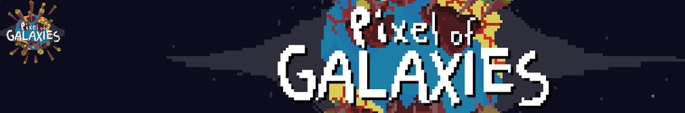
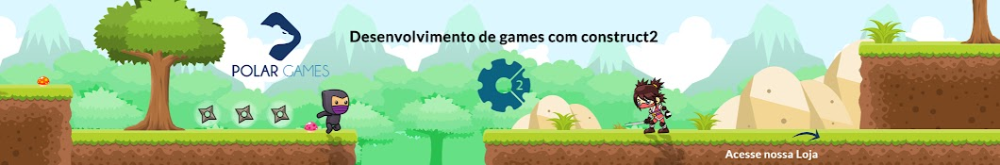
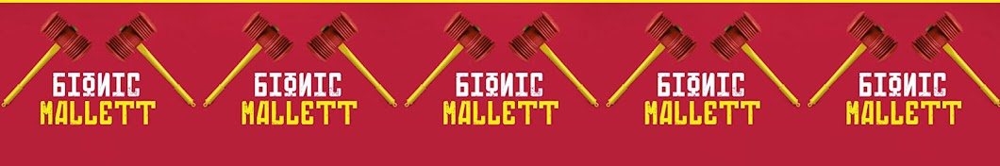
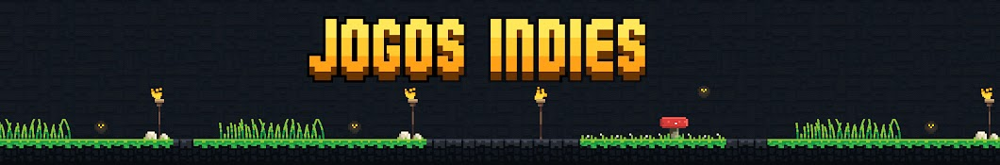
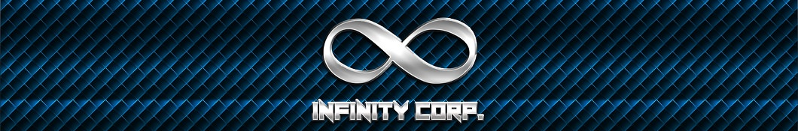
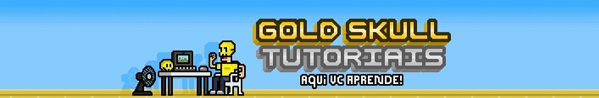

Compilado de canais brasileiros de tutoriais de Construct 2
Neste artigo, organizei os canais do youtube com um pequeno resumo com links e descrições dos conteúdos relacionados ao
desenvolvimento de jogos usando a game engine construct 2.
Se você é iniciante em Construct 2, recomendo que assista este vídeo, pois ele explica com detalhes as opções mais básicas
da ferramenta. Caso tenha alguma dúvida sobre a engine, consulte a postagem abaixo, que está separado conteúdos abordados
em diversos canais brasileiros do youtube.
"Quando se constrói um edifício, primeiro é necessário ter um bom alicerce" - Fred Oliveira
Pixel of Galaxies

- Webstorage, families
- Sistema de upgrade
- Lógica da engine Construct 2
- Criação de jogo mobile
- Trabalhando com versionamento com GIT
Polar Games

- Criação de um jogo plataforma
- Criação de um jogo par aAndroid, exploração
- Criação de um jogo no estilo infonity running
- Containers
- Banco de dados com Construct 2
- Diversas formas de exportação, Web, Desktop, Mobile, etc
Obs: O criador também vende templates e disponibiliza alguns de graça no seu Site oficial.
Jogos Grátis Pro
- Como criar um jogo de moto
- Funcionamento do Delta Time
- Diferenças entre função e grupos
- Diversos assuntos relacionados a Construct 2, além de sorteios de templates são realizados no canal.
Obs¹: Criador também possui um site, onde tem diversos jogos que rodam direto do navegador, além da loja onde é possível comprar templates ou baixar gratuítos. Site oficial
Obs²: Criador também possui um curso completo de um jogo de plataforma que disponibilizou na plataforma Udemy, está gratuito e no final, emite um certificado. Curso Udemy Free
Deskomplika Cursos
- Criando uma barra de vida no estilo Diablo
- Sistema de partículas
- Criação de cenários com Tiles
- Criação doos Menus do Jogo
- Dentre vários outros assuntos
OPolegar - Marreta Biônica

- Criação de um jogo no estilo Megaman X
- Criação de jogo no estilo Flappy Bird
- Criando um jogo no estilo Plants vs Zombies
- Inteligência artificial básica e média
DG Cursos
- Criação de um jogo completo "Green Madnes", são 31 aulas, muito bem explicado.
Derikvlog
- Como segurar e soltar objetos
- Mecânica de quebrar blocos "estilo Mario Bros"
Merely Easy
- Criação de um jogo no estilo Megaman X
- Criação de jogo no estilo Flappy Bird
- Criando um jogo no estilo Plants vs Zombies
- Inteligência artificial básica e média
Canal Amilton Neves
- Criação de um jogo de nave básico
- Mudar layout de loading
- Criação de um teclado virtual para escrever o nome do jogador por exemplo
- Gerador de terreno "procedural"
- Trabalhando com Spriter "Programa de animação vetorial"
Canal Indie Games
- Desenvolvendo um jogo de nave
- Desenvolvendo um clone Flappy Bird
- Desenvolvendo um jogo da memória
- Desenvolvendo um clone Timberman
Conheça o site oficial do desenvolvedor
Perametade Games
- Detona Pix "Jogo de nave"
- Criando um game infantil
- Tutorial abordando diversas mecânicas com Construct 2
- Exportação e publicação
- Trabalhando com Sprite font
Conheça o site oficial do desenvolvedor
Canal Jogos Indies

- Criando um jogo estilo Fruit Ninja
- Conhecendo o Construct 2
- Criando um jogo estilo Megaman Classic
Obs: Os últimos vídeos do canal estão sendo feitos com base na Engine Unity
Infinity Corp.

- Criando um jogo no estilo Agario com Multiplayer
Oficina de Games
- Criando um jogo de plataforma completo "39 vídeos"
- Criando um jogo de luta
- Tutoriais Inkscape
- Tutoriais de Blender
Conheça o site oficial do desenvolvedor
Caverna do Jogador
- Canal contém apenas 1 curso, porém este está completo abordando detalhadamente o Multiplayer em Construct 2
Estech
- O canal contém apenas 1 curso sobre a Engine Construc 2, porém está completo e aborda diversos recursos da engine de fora simples de entender, como física, partículas e Pathfinfing entre outros.
Obs: Este canal aborda assuntos diversos relacionado a aprendizado, postagem regular de conteúdos
Marcos Game Dev

- Tutorial para criação do Megaman X "no momento com mais de 50 aulas".
- Curso Beat'em Up "sim no estilo Final Fight, Street of Rage".
- Curso de geração procedural de fases.
- Além de aulas diversas.
Obs: Este canal hoje em dia é o mais ativo na comunidade brasileira de construct 2 e 3.
Conheça o site oficial do desenvolvedor
Anna Nehves

- Como fazer o MS Paint no Construct 2.
- Como fazer um diálogo estilo RPG.
- Explodindo cenário "estilo Worms".
- Criando uma roleta de prêmios.
Obs: Talvez a única mulher que está fazendo tutoriais de Construct 2. Eu considero excepcional a inserção das mulheres no desenvolvimento de jogos, ainda mais sendo na programação. É muito animador.
Gold Skull Tutoriais - Criação de Jogos

- Como criar o Megaman.
- Como fazer o Megaman dar rasteira "slide".
- Como fazer o Megaman subir escadas.
Tubo Celular
- Como movimentar o personagem.
- Criar inimigo.
- Como exportar o jogo.
Jornada Dev
Indie Power
- Criação de menu
- Criação de barra de energia
- Passagem secreta
Conheça o site oficial do desenvolvedor